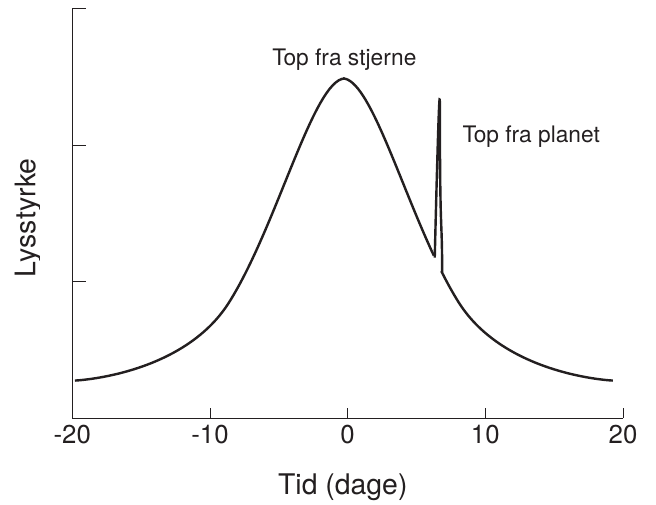
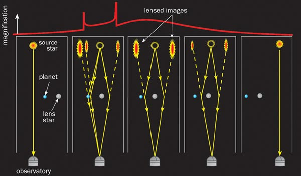
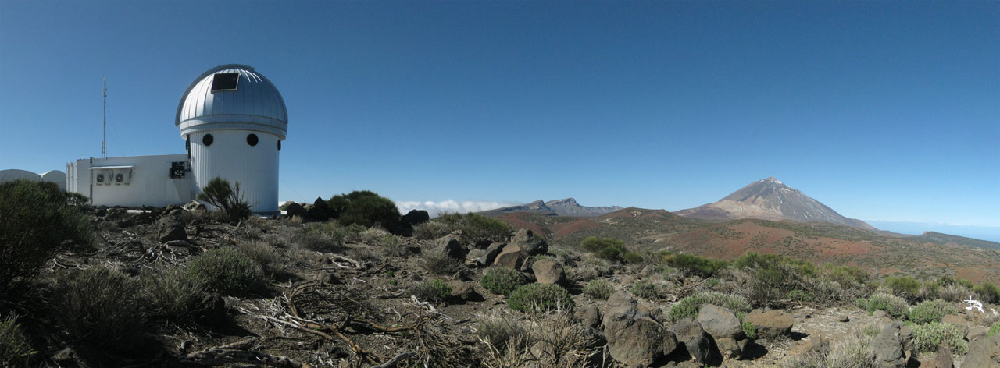

Exoplaneten
Astronomiworkshop
Vibenshus Gymnasium
Velkommen
Forestil jer
tanken om
at bebo en fremmed planet
en exoplanet
Hvad skal der til?
- Først skal de opdages.
- Så skal der rejses der hen.
- Gerne med en udforskningsrobot, som kan tage prøver.
- Disse skal så testes for, om de er giftige.
4 workshops
Derfor har vi 4 workshops
Astronomi
Hvordan finder man exoplaneter?
(Raket)Fysik
Hvad skal der til for at rejse der hen?
Programmér en rover
Hvordan styrer man en udforskningsrobot?
Jordbundsanalyse
Hvordan kan man foretage en jordbundsanalyse?

Exoplaneter
- En exoplanet er en planet, som bevæger sig om en anden stjerne end Solen.
- Den 21. august 2024 er der registreret 5747 exoplaneter. (Kilde https://en.wikipedia.org/wiki/Exoplanet)

Observationsmetoder
Hvordan observeres de?
- Radialhastighed
- Astrometri
- Formørkelse
- Microlensing
- Direkte observationer
Radialhastighed
Den første metode til at påvise exoplaneter.
Animation

Astrometri
En meget svær metode. Kun en exoplanet er opdaget på denne måde.
Formørkelsesmetoden
Den mest succesfulde metode.
Microlensing
Kan detektere meget små exoplaneter.
Microlensing


Gravitationslinse uden exoplanet

Gravitationslinse med exoplanet

SONG-teleskopet

- Dansk teleskop på Tenerife.
- Samarbejde mellem Aarhus Universitet og Københavns Universitet.
- Fuldautomatiseret.
SONG was conceived with two primary scientific goals in mind:
- To study the internal structure of stars at a level to what can be done for the Sun when it is observed as a distant star using asteroseismology as a tool.
- To search for and characterize planets in orbit around other stars using both gravitational microlensing observations, transit photometry and radial velocity measurements.
Kilde: https://phys.au.dk/song/research-and-facilities/science-with-song/
Direkte observationer
- 2M1207b
- Første billede af en exoplanet
- 2004 af VLT
- 5 gange tungere end Jupiter
- 55 gange afstanden mellem Jorden og Solen
- 230 lysår væk
- Billedet er sammensat af 3 nærinfrarøde billeder

VLT - Very Large Telescope
Kan man så bo der?
Den beboelige zone

Den beboelige zone
Vi ved at der er liv på Jorden.
- Den beboelige zone er derfor et bælte omkring en stjerne med nogenlunde samme flux, som vi modtager fra Solen.
- Kaldes undertiden guldlokzonen.
- Her er der lige tilpas varmt.

Kan vi selv regne den ud?
- Ja selvfølgelig!
- Men først skal vi lige vide lidt om luminositet og flux.

Luminositet
- Den samlede effekt i alle retninger.
- Måles i watt, eller i enheder af \(L_{\odot}\) (solluminositeter)

Flux
- Effekt per areal.
- \(\phi = \sigma \cdot T^4\) Stefan-Boltzmanns lov

Sammenhæng
- \(L = A_\text{overflade} \cdot \phi\)
- \(A_\text{kugleoverflade} = 4 \pi r^2\)
- \(L = 4 \pi r^2 \cdot \phi\)
- \(\boxed{r = \sqrt{\frac{L}{4 \pi \phi}}}\)

Beboelig zone om Jorden
- Jorden modtager en flux fra Solen på \(\phi = 1386 \, \frac{W}{m^2}\)
- Jordens afstand til Solen er \(1 \, AE = 1.496 \cdot 10^{11} \,m\).
- Solens luminositet er \(L_\odot = 3.90 \cdot 10^{26} \,W\)
- Lad os antage at den beboelige zone ligger der, hvor fluxen er mellem \(1200 \, \frac{W}{m^2}\) og \(1500 \, \frac{W}{m^2}\)
- Lad os indsætte værdierne i formlen fra forrige side.
- \(r = \sqrt{\frac{L}{4 \pi \phi}}\)
- \(r_\text{max} = \sqrt{\frac{3.90 \cdot 10^{26}W}{4 \pi \cdot 1200 W/m^2}}=1.61\cdot 10^{11} m = 1.07 \,AE\)
- \(r_\text{min} = \sqrt{\frac{3.90 \cdot 10^{26}W}{4 \pi \cdot 1500 W/m^2}}=1.44\cdot 10^{11} m = 0.96 \,AE\)
Beboelig zone om andre stjerner
- Hvis en anden stjerne har en luminositet på \(L = k \cdot L_\odot\) bliver formlerne til
- \(r_\text{max} = \sqrt{k} \cdot 1.07 \, AE\)
- \(r_\text{min} = \sqrt{k} \cdot 0.96 \, AE\)
Opgave
- Beregn de beboelige zoners bredder og afstande for de viste typer af stjerner.
- Beregn, hvor meget Solens luminositet skal ændre sig, før Jorden kommer til at befinde sig uden for den beboelige zone.
| Spektraltype | Luminositet \(L/L_{\odot}\) |
|---|---|
| B5 | 800 |
| A0 | 60 |
| F0 | 8 |
| G0 | 1.4 |
| K0 | 0.4 |
| K5 | 0.2 |
| M0 | 0.06 |
Svar
| Spektraltype | \(L/L_{\odot}\) | \(r_\text{min} [AE]\) | \(r_\text{max} [AE]\) | Bredde \([AE]\) |
|---|---|---|---|---|
| B5 | 800 | 27.15 | 30.26 | 3.11 |
| A0 | 60 | 7.44 | 8.29 | 0.85 |
| F0 | 8 | 2.72 | 3.03 | 0.31 |
| G0 | 1.4 | 1.14 | 1.26 | 0.12 |
| K0 | 0.4 | 0.61 | 0.68 | 0.07 |
| K5 | 0.2 | 0.43 | 0.48 | 0.05 |
| M0 | 0.06 | 0.24 | 0.26 | 0.02 |
- Hvis \(r_\text{min} = 1 AE\) så er \(1 AE = \sqrt{k} \cdot 0.96 AE \to k = \left( \frac{1}{0.96} \right)^2 = 1.085\) . Luminositeten er steget med 8.5%
- Hvis \(r_\text{max} = 1 AE\) så er \(1 AE = \sqrt{k} \cdot 1.07 AE \to k = \left( \frac{1}{1.07} \right)^2 = 0.87\) . Luminositeten er faldet med 13%
Konklusion
- Beboelig zone længere væk for store stjerner.
- Beboelig zone bredere for store stjerner.
- Omkring hvilke stjerner vil det så være nemmest at lede efter exoplaneter i den beboelige zone?

Men, men, men
- Der er ikke særligt mange store stjerner i universet.
- Store stjerner "lever" i meget kort tid (~1 000 000 år for O)
- Solen lever i ca 12 mia år.
- De små stjerner lever lææænge (~ 100 mia år)
- Men den beboelige zone er meget tæt på stjernen.
- Exoplanet og stjerner kommer i bunden rotation. Ingen dag og nat.
- Man vil blive svitset af stjernens stråling, hvis man er så tæt på den.
- Overfladen på en lille stjerne er meget mere aktiv/urolig end store stjerner. Udsender mange "solstorme".
Spektralklasser
Hvad er det nu for noget?
| Type | Masse (1 for Solen) | Temp [K] | Radius (1 for Solen) | Luminositet (1 for Solen) |
|---|---|---|---|---|
| O | 60 | 50 000 | 15 | 1 400 000 |
| B | 18 | 28 000 | 7 | 20 000 |
| A | 3.2 | 10 000 | 2.5 | 80 |
| F | 1.7 | 7 400 | 1.3 | 6 |
| G | 1.1 | 6 000 | 1.1 | 1.2 |
| K | 0.8 | 4 900 | 0.9 | 0.4 |
| M | 0.3 | 3 000 | 0.4 | 0.04 |
Oh Be A Fine Girl Kiss Me!

Hvordan skelner man så stjernerne fra hinanden?
Spektralanalyse
Simpel atomfysik
Emission

Absorption

Spektra

Fingeraftryk

Sortlegemestråling

Sortlegemestråling

Spektrallinjer + sortlegemestråling
|
+ | |
Spektrallinjer + sortlegemestråling

Hvorfor ser man mest absorptionslinjer fra stjerner?

- Fordi lyset skal ud gennen stjernens (kolde) atmosfære.
Men der er mere endnu
Dopplereffekten
Rød- og blåforskydning


- Stjernen Arcturus bevæger sig væk fra os, fordi spektrallinjerne er rødforskudte!
Dopplerudtværing

- Hvorfor skaber roterende og/eller varme stjerner bredere spektrallinjer?
Opsummering
 |
 |
- Form på sortlegemestråling (Varm vs kold)
- Se efter obsorptionslinjer for bestemte grundstoffer
- (Rød og blåforskydning)
- Bredde af absorptionslinjer (Varm vs kold)
| Spektralklasse | Fremtrædende absorptionslinjer |
|---|---|
| O | He+,He,H, He, H |
| B | He,H |
| A | H(stærkest),ioniserede metaller |
| F | Ioniserede metaller |
| G | Ioniserede og neutrale metaller |
| K | Neutrale metaller |
| M | Neutrale atomer, TiO |
Sammenlign spektre
- 9 spektre af kendte stjerner. Læg dem op i spektralklasserækkefølge. Sammenlign dem.
- Læg mærke til bredde af udvalgte spektrallinjer.
- Hydrogenlinje ved 6563 Å er god at studere.
- Varme stjerner har bredere absorptionslinjer end kolde.
- Kolde stjerner har mere "ujævne" spektre ift. varme.
- Nogle spektrallinjer optræder hos nogle stjerner og ikke andre.

2 ukendte stjerner


- Giv jeres bedste bud på disse to stjerners spektralklasse.
Og svaret er


- Hvordan får man så egentlig disse spektre?
- Vha et spektrometer!
Spektrometer

Kan laves selv

Men vi har snydt lidt
Montér på jeres telefon med tape

Grundstofbestemmelse
Ukendte grundstoffer
Bestem de ukendte grundstoffer udelukkende vha jeres spektrometre.

Her er lidt hjælp igen
Endnu mere hjælp
- Brint, Neon og Kviksølv